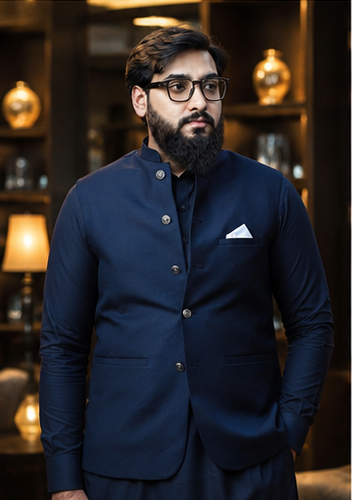
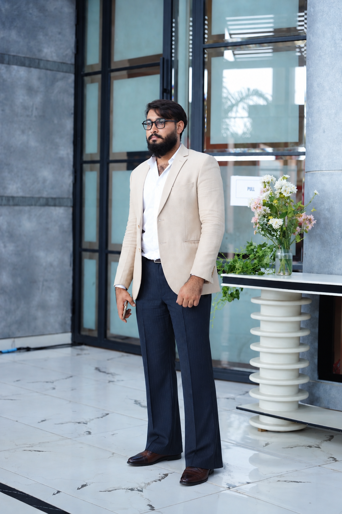

▣
Television
Production
Assistant Producer
at Lahore Rang
I’m Muhammad Muaz Dhillon, a Performance Marketing and Social Media Executive from Lahore. I plan and optimize Meta Ads, Google Ads, Google Shopping and PPC campaigns, measure them with GA4, and use AI tools like Gemini, HeyGen and Codex to scale content and automate workflows.


Assistant Producer
at Lahore Rang
Election Cell
at SAMAA News
M.C Advertising Agency
Social Media Executive
at Web Excels
Professional experience across social media and paid ads, television programming, election-related news operations, creative post-production, digital content and event media.
Paid advertising built around measurable results — from first click to tracked conversion — across Meta, Google Search, Shopping and Analytics. Click any card to see my plan and strategy.
Campaign structure, audience targeting, creative testing and retargeting to drive leads and sales on Facebook and Instagram.
View my approachKeyword research, high-intent Search campaigns, ad copy, negative keywords, bid strategy and Display remarketing.
View my approachShopify store management, product feed optimisation in Merchant Center and Shopping / PMax campaigns for e-commerce visibility and ROAS.
View my approachEnd-to-end paid-search management: budgets, bidding, A/B testing and continuous optimisation to lower CPA and lift conversions.
View my approachGoogle Analytics 4 and Google Tag Manager setup, conversion tracking and audience insights so every rupee of ad spend is measurable.
View my approachOn-page SEO, keyword-led copy and content planning that complements paid campaigns and builds organic reach.
View my approachHow I run campaigns
A funnel-based approach to Facebook and Instagram advertising: clean tracking first, structured audiences, systematic creative testing and disciplined scaling.
High-intent search campaigns built on keyword research, tight structure and smart bidding, with Display used to re-engage visitors.
E-commerce advertising that starts with a healthy product feed and ends with profit-based bidding — built for Shopify-style online stores.
A repeatable system for paid search and paid social: define the numbers, structure the account, test one thing at a time and report in plain language.
Tracking is the foundation of every ad account. I plan measurement first, build it with GTM and GA4, and validate it before trusting any report.
Foundational SEO that supports paid campaigns and organic reach: keyword-led pages, clean on-page structure and technical basics.
AI scales the output, but the thinking stays human: goal, audience and message first, tools second.
I script and plan the video first, then generate it with Gemini and HeyGen and finish it in Premiere Pro or CapCut — faster output without losing brand consistency.
Content calendars, captions and creatives produced with AI assistance, reviewed against brand voice, then published and tracked across the company’s pages.
Repetitive marketing tasks turned into repeatable workflows using AI agents such as Codex, so more time goes into strategy, testing and optimisation.
My AI content workflow
Performance marketing, analytics, creative and production skills supporting projects from planning through delivery.
A performance marketer and media professional turning content, data and ad spend into measurable growth.
I plan, launch and optimise paid campaigns on Meta Ads, Google Ads and Google Shopping, and use Google Analytics and conversion tracking to measure what actually works. I have managed Shopify stores, done basic WordPress work, and use AI tools (Gemini, HeyGen, Codex) to scale content and automate workflows, while strategy and results stay with me. Alongside ads, I bring basic SEO, graphic design, video editing, copywriting and social media management to every brand I work with.
I hold a BS in Media and Communication from the University of Management and Technology (UMT). My experience spans television programming, news operations, advertising, editing, digital content and event media.
At Web Excels, an Alibaba.com Global Channel Partner, I manage social media pages and corporate events. I bring team coordination, project execution and multitasking skills, with a practical understanding of how creative work moves from concept to completion.
Education: BS Media and Communication, UMT · 2020–2024 · CGPA 3.45
For Performance Marketing, PPC, Meta Ads, Google Ads, social media or Producer opportunities — as well as media projects and collaborations — I’d be happy to connect.